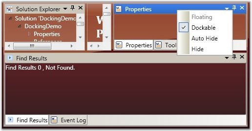
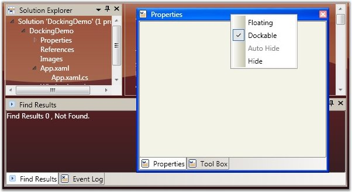
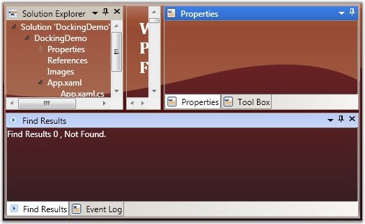
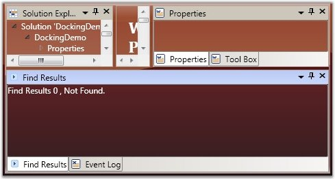
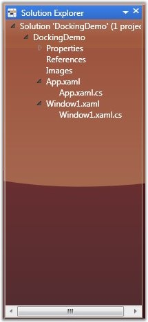
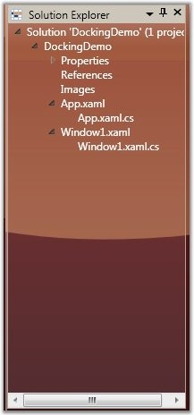
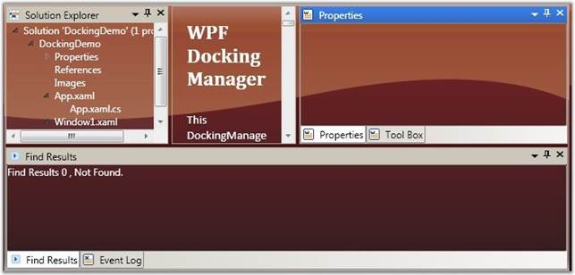
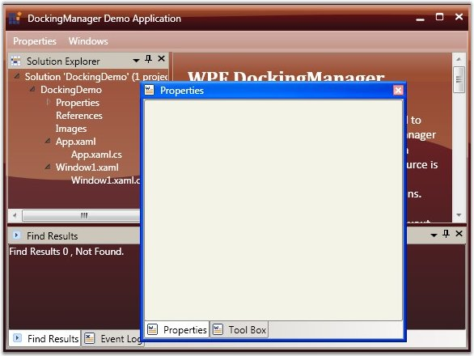

The following description gives you a clear knowledge aboutdocking, float and closing a dockable window.
Docking a Dockable Window
DockingManager facilitates the users to allow or restrict a dockable window to move to the docked state. This is done by using the CanDock property of the DockingManager. When this property is set to False, the dockable window will be restricted to enter the docked state; it can either be in floating or in auto hidden state. Also this setting will not allow the transition of states from Auto Hide to Float or vice versa, as the window needs to change the dock state as a part of the transition.
For settings, CanDock property, use the following code.
|
[XAML] <Grid Name="Properties" sftools:DockingManager.CanDock="True"/> |
|
[C#] DockingManager.SetCanDock(Properties, true); |
Floating a Dock Window
The Floating state of a dockable window is controlled by using the CanFloat property. When the CanFloat property is set to False, the window can take either docked or auto hidden states. It will not be allowed to float until the CanFloat property is enabled.
To enable the CanFloat property of DockingManager, use the following code.
|
[XAML] <Grid Name="Properties" sftools:DockingManager.CanFloat="True"/> |
|
[C#] DockingManager.SetCanFloat(Properties, true); |

Figure 327: CanFloat = "False"

Figure 328: CanFloat = "True"
Closing a Dock Window
The DockingManager gives the option for users to control the closing functionality of the dockable window. A window is restricted from closing by disabling the CanClose property of the DockingManager. When this property is set to False, it will not display the close button in the header of the window.
To set this property, refer the following code.
|
[XAML] <Grid Name="Properties" sftools:DockingManager.CanClose="True"> |
|
[C#] DockingManager.SetCanClose(Properties, true); |

Figure 329: CanClose = "False"

Figure 330: CanClose = "True"
Refer Also
By default, all docked windows will have the ability to auto hide, when the user clicks the auto hide button. This feature can be disabled using the AutoHideVisibility property. This property is typically used to allow or deny the changing element's state to auto hidden, through Graphical User Interface (GUI), by showing / hiding the AWL button in the host header and hence auto hiding the context menu item.
Here is the code snippet for setting the above property.
|
[XAML] <!--Declaring Docking Manager AutoHideVisibility to False --> <syncfusion:DockingManager AutoHideVisibility="False"> <!--Your contents here--> </syncfusion:DockingManager> |
|
[C#] //Creating an instance for Docking Manager. DockingManager = new DockingManager(); //Setting AutoHideVisibility to true. DockingManager.AutoHideVisibility = true; |

Figure 331: AutoHideVisibility = "False"

Figure 332: AutoHideVisibility = "True"
Refer Also
There are two modes of auto hiding behavior. They are:
· AutoHideGroup (default): All elements in the tabbed host will be auto hidden.
· AutoHideActive: Only the active window will be auto hidden.
|
[XAML] <!--Declaring Docking Manager with AutoHide Active--> <syncfusion:DockingManager AutoHideTabsMode="AutoHideActive"> <!--Your contents here--> </syncfusion:DockingManager> |
|
[C#] //Creating the instance of the Docking Manager. DockingManager = new DockingManager(); //Setting AutoHideGroup for the Docking Manager. DockingManager.AutoHideTabsMode = AutoHideTabsMode.AutoHideGroup; |
Events Handled While Auto hiding
The following events are handled while Auto hiding.
|
Event |
Description |
|
AutoHideAnimationStartEvent |
Handled when auto hiding operation starts. |
|
AutoHideAnimationEndEvent |
Handled when auto hiding operation ends. |
DockingManager supports three different built–in animations for auto-hiding the windows. They are listed below.
· Slide: Elements auto hides in a sliding style.
· Scale: Elements follows a particular scale while auto hiding.
· Fade: Element’s appearance fades while it auto hides.
The animation modes can be applied by using the AutoHideAnimationMode property of the Docking Manager.
To apply different animation styles to the docking windows, use the following code. This setting will get reflected when the user auto hides a window at run time.
|
[XAML] <!--To set the Fade animation mode--> <sftools:DockingManager Name="DocManager1" AutoHideAnimationMode="Fade"/> |
|
[C#] //To set the Fade animation mode. this.DockingManager.AutoHideAnimationMode = AutoHideAnimationMode.Fade; |
Animation Duration
DockingManager enables you to control the duration for animation or the animation delay, while auto hiding the docking windows. Animation delay is set by using the AnimationDelay property of the DockingManager. It accepts the duration in milliseconds.
The following code sets the AnimationDelay property.
|
[C#] //To set Very slow animation delay. this.DockingManager.SetAnimationDelay(DocManager1, new Duration(new TimeSpan(30000000))); //To set Very fast animation delay. this.DockingManager.SetAnimationDelay(DocManager1, new Duration(new TimeSpan(10000))); |
To set CloseTabs as CloseActive mode, use the following code:
|
[XAML] <sftools:DockingManager Name="DocManager1" CloseTabs="CloseActive"/> |
|
[C#] this.DockingManager.CloseTabs = CloseTabsMode.CloseActive; |
The DockingManager enables you to restrict an element to be dragged from one side to another. The dragging functionality is disabled for a window by setting the CanDrag property to false.
The following code is used to enable the CanDrag property.
|
[XAML] <Grid Name="Properties" sftools:DockingManager.CanDrag="True"/> |
|
[C#] DockingManager.SetCanDrag(Properties, true); |

Figure 333: CanDrag = "False"

Figure 334:CanDrag = "True"